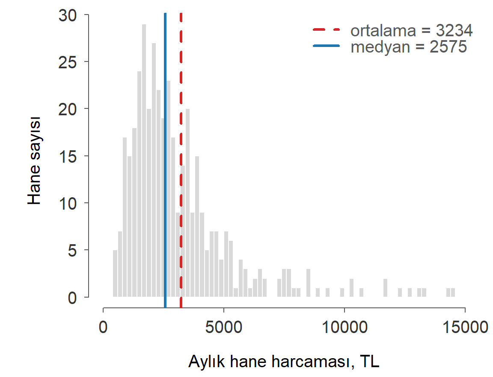
İstatistik I · 3. Ders · 15 Ekim 2026
Yıldız Teknik Üniversitesi, İktisat Bölümü
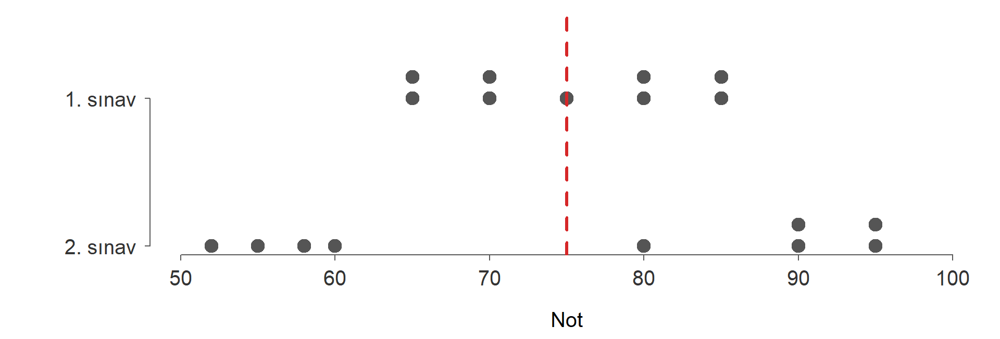
İki sınavın ortalaması da 75. Merkez ölçüsü bu farkı göremez; yayılımı ayrıca ölçmek gerekir.
Aralık
Kartiller aralığı
Ortalamadan sapmaların toplamı her zaman sıfırdır; bu yüzden sapmaların kareleri toplanır.
Anakütle varyansı
Örneklem varyansı
Yedi hanenin aylık harcaması (TL): 2600, 3600, 2150, 3600, 5250, 2350, 3200
| 1 | 2600 | 422500 | |
| 2 | 3600 | 350 | 122500 |
| 3 | 2150 | 1210000 | |
| 4 | 3600 | 350 | 122500 |
| 5 | 5250 | 2000 | 4000000 |
| 6 | 2350 | 810000 | |
| 7 | 3200 | 2500 | |
| Toplam | 22750 | 0 | 6690000 |
Standart sapma verinin kendi birimindedir: haneler ortalama 3250 TL harcıyor, standart sapma yaklaşık 1056 TL.
Değişkenlik katsayısı birimden bağımsızdır; ortalamaları farklı değişkenlerin yayılımını karşılaştırmayı sağlar:
| 1. sınav | 74 | 8 | %10.8 |
| 2. sınav | 52 | 15 | %28.8 |
İkinci sınavda notlar ortalamaya göre çok daha fazla yayılmış.
Ortalaması , standart sapması olan her dağılımda, için ortalamadan en çok standart sapma uzaktaki gözlemlerin payı
| 1.5 | 2 | 3 | |
|---|---|---|---|
| Alt sınır | %55.6 | %75.0 | %88.9 |
Chebyshev “yaklaşık %75” demez, “en az %75” der
Bir alt sınırdır ve dağılımın biçimi hakkında hiçbir şey varsaymaz. Dağılım çan biçimliyse çok daha dar bir sonuç söylenebilir: gözlemlerin yaklaşık %68’i, %95’i ve %99.7’si ortalamadan en çok 1, 2 ve 3 standart sapma uzaktadır (ampirik kural).
81 ilin tamamı gözlendiği için bu veri bir anakütledir: 61.2, 7.5.
Dağılımın biçimini bilmiyorsak illerin en az yüzde kaçında mutluluk endeksi aralığındadır? Bu aralık nedir?
Üç farklı biçimde 5000’er gözlem. Yatay eksen ortalamadan uzaklığı standart sapma cinsinden gösteriyor; mavi çubuklar bandının içinde.
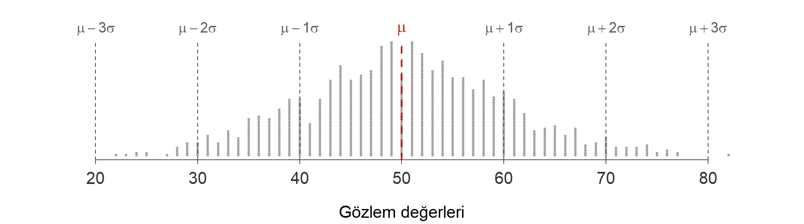
Dağılım çan biçimli ve simetrikse gözlemlerin yaklaşık
| aralık | pay |
|---|---|
| %68 | |
| %95 | |
| %99.7 |
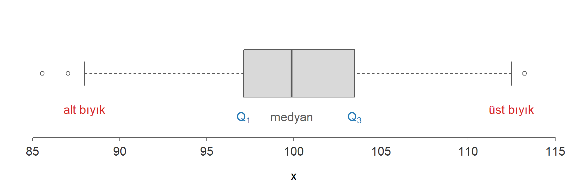
13 öğrencinin notu. En düşük not (48) sınava girmeyen bir öğrenci için 0’a kadar düşebilir.
Turuncu kesikli çizgiler ve sınırları. Gri noktalar bütün gözlemler. Kartiller kitaptaki yöntemle hesaplandı.
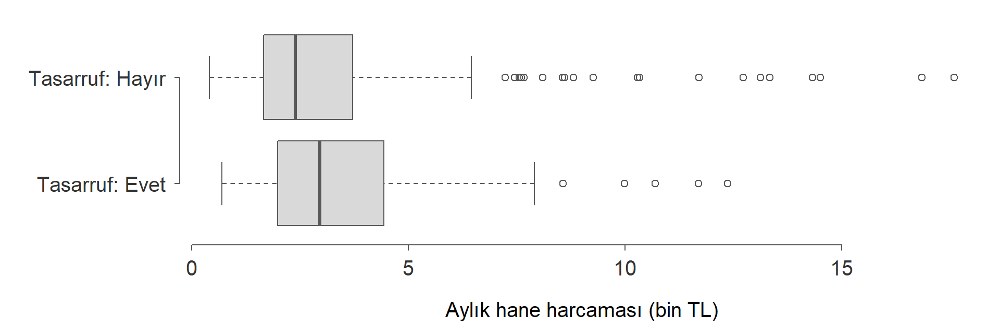
Tasarruf yapan ve yapmayan hanelerin harcamalarını medyan, yayılım ve uç değerler bakımından karşılaştırın. Dağılım simetrik mi?
Hane harcamasında 2.49: uzun sağ kuyruk ortalamayı medyanın üstüne çeker.

Kaydırıcı ortada simetrik veri üretir; sağa çektikçe sağa, sola çektikçe sola çarpık veri. Veri her açılışta aynıdır (tohumlu simülasyon).
BIST100 günlük getirisinde 8.07.
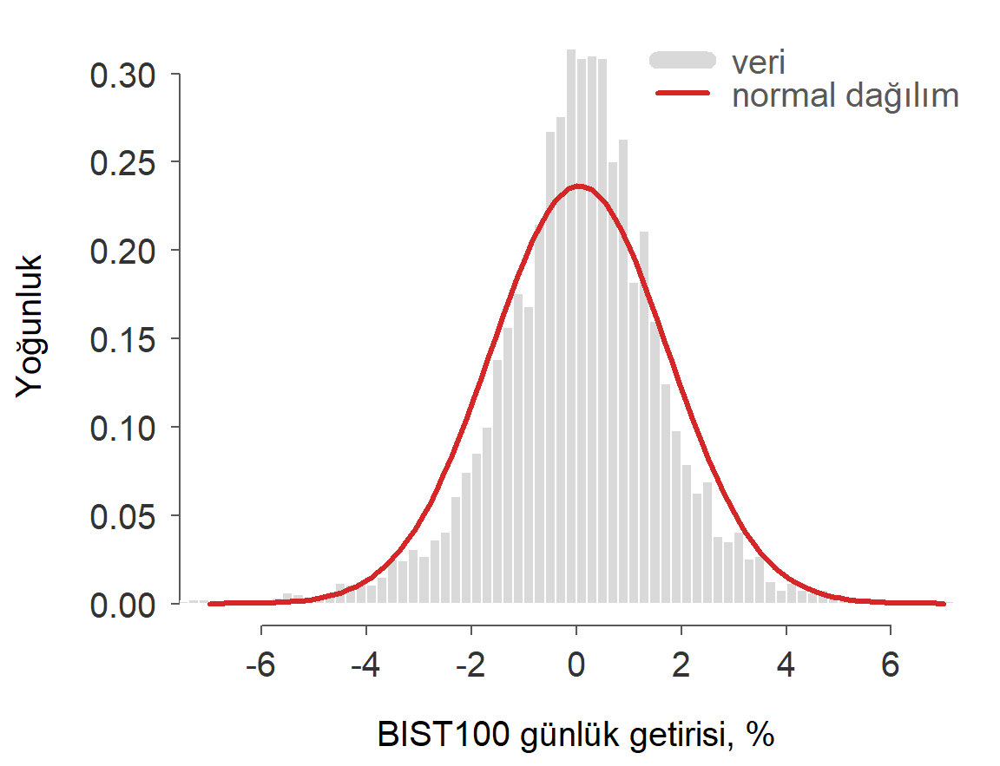
| Soru | Ölçü | Uç değere dirençli mi? |
|---|---|---|
| Merkez | ortalama | hayır |
| medyan | evet | |
| Konum | kartiller, yüzdelikler | evet |
| Yayılım | aralık | hayır |
| kartiller aralığı | evet | |
| varyans, standart sapma | hayır | |
| Biçim | çarpıklık, basıklık | hayır |
10 öğrencinin derse devam oranı () ve notu ():
| Öğrenci | 1 | 2 | 3 | 4 | 5 | 6 | 7 | 8 | 9 | 10 |
|---|---|---|---|---|---|---|---|---|---|---|
| 80 | 75 | 70 | 90 | 91 | 60 | 86 | 95 | 83 | 70 | |
| 75 | 78 | 50 | 80 | 81 | 60 | 80 | 90 | 76 | 80 |
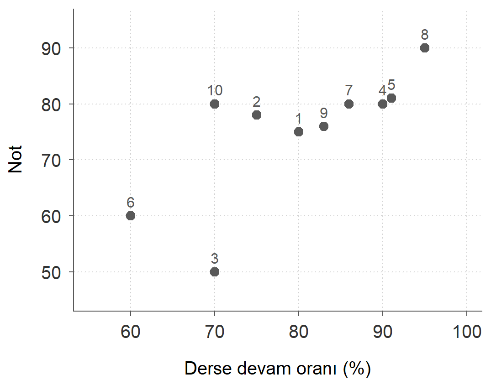
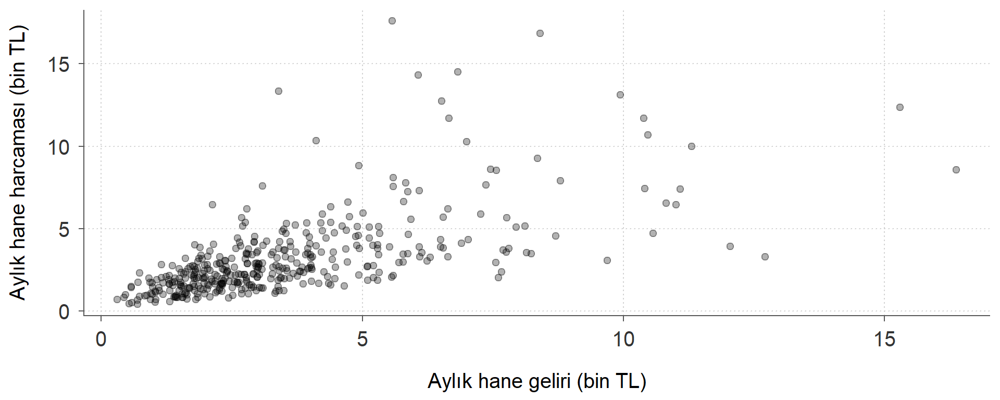
400 hane. Pozitif ilişki, ama noktalar sol altta yoğunlaşıyor (iki değişken de sağa çarpık) ve gelir arttıkça harcamalar daha çok dağılıyor.
İki değişkenin birlikte nasıl değiştiğini ölçer:
Anakütle
Örneklem
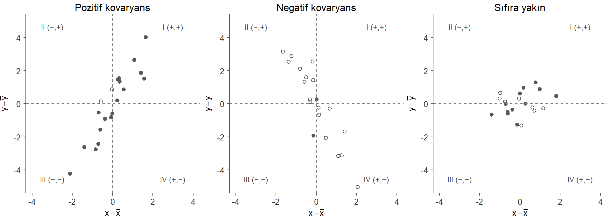
Dolu nokta: (bölge I ve III) · Boş nokta: çarpım negatif (bölge II ve IV)
| Çarpım | |||||
|---|---|---|---|---|---|
| 1 | 80 | 75 | 0 | 0 | 0 |
| 2 | 75 | 78 | 3 | ||
| 3 | 70 | 50 | 250 | ||
| 4 | 90 | 80 | 10 | 5 | 50 |
| 5 | 91 | 81 | 11 | 6 | 66 |
| 6 | 60 | 60 | 300 | ||
| 7 | 86 | 80 | 6 | 5 | 30 |
| 8 | 95 | 90 | 15 | 15 | 225 |
| 9 | 83 | 76 | 3 | 1 | 3 |
| 10 | 70 | 80 | 5 | ||
| Toplam | 800 | 750 | 0 | 0 | 859 |
,
Devam oranını yüzde yerine 0 ile 1 arasında bir oran olarak yazalım. Veri aynı, yalnız birim değişti.
yuzde oran
95.4444444 0.9544444 Kovaryans 100’e bölündü, ilişkinin kendisi ise hiç değişmedi.
yuzde oran
0.7435248 0.7435248 Kovaryansı iki standart sapmanın çarpımına bölmek ölçü birimini ortadan kaldırır:
Anakütle
Örneklem
Devam ve not: ,
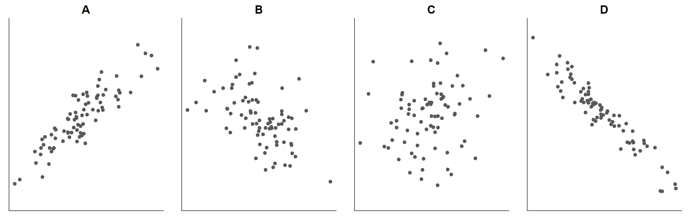
Her grafik için korelasyon katsayısını tahmin edin. Seçenekler: , , ,
A: 0.89 · B: -0.49 · C: 0.21 · D: -0.95
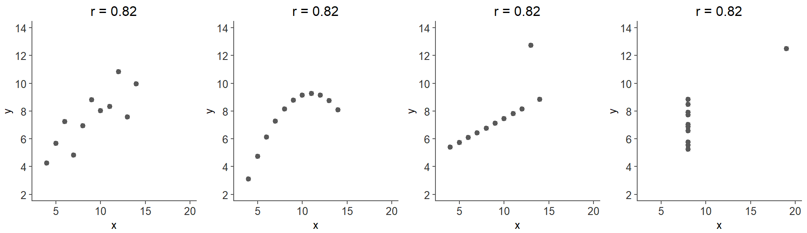
Dört veri kümesinde ve ’nin ortalamaları, varyansları ve korelasyonu neredeyse aynı. Grafikler ise bambaşka: doğrusal, eğrisel, tek uç değerin belirlediği ilişkiler.
Korelasyon yalnızca doğrusal ilişkiyi ölçer
’yi her zaman serpilme çizimiyle birlikte yorumlayın. ilişki yok demek değildir; ilişki doğrusal olmayabilir.
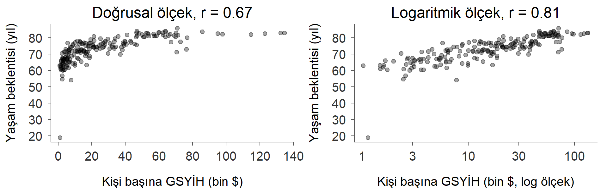
194 ülke, 2022.
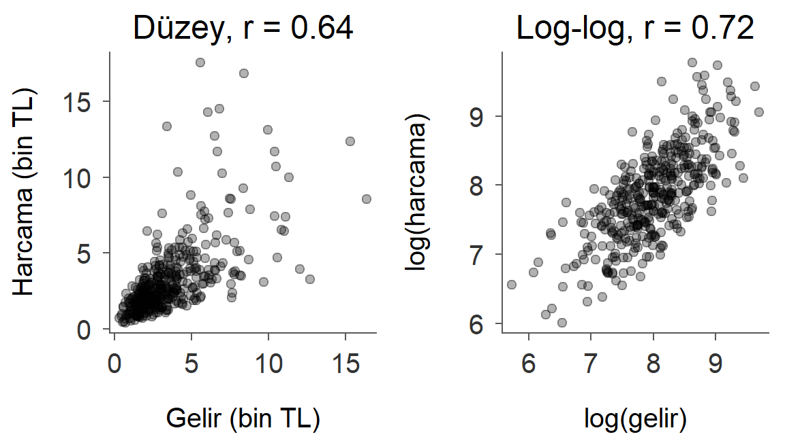
400 hane, aylık gelir ve harcama.
Pearson katsayısı iki durumda yetersiz kalır. Değişken sıralı olabilir (memnuniyet puanı gibi), ya da ilişki tek yönlü ama doğrusal olmayabilir.
Çözüm: değerlerin yerine sıralarını kullan.
[1] 5.0 4.0 2.5 8.0 9.0 1.0 7.0 10.0 6.0 2.5Devam oranı 70 olan iki öğrenci 2. ve 3. sırayı paylaştığı için ikisine de 2.5 verilir.
Spearman katsayısı, sıraların Pearson korelasyonudur.
pearson spearman
0.7435248 0.7938800 Gelir ve yaşam beklentisi verisinde Pearson katsayısı ölçek değişince 0.68’den 0.81’e çıkıyordu. Spearman katsayısı ise 0.86 ve logaritma alınınca değişmiyor, çünkü sıralama değişmiyor.
Güçlü bir korelasyonun başka açıklamaları olabilir:
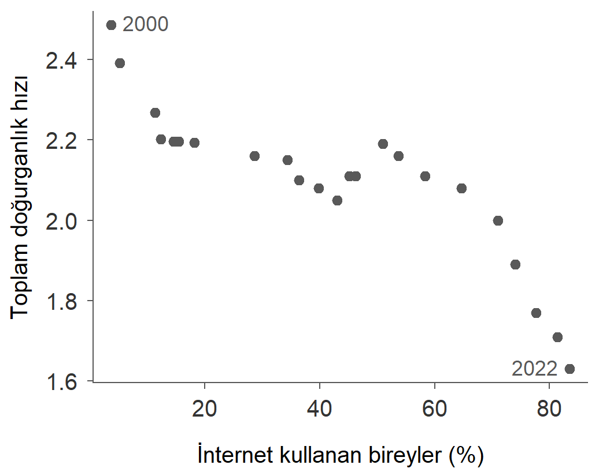
Türkiye, 2000-2022.
-0.88: güçlü negatif ilişki.
İnternet kullanımı doğurganlığı düşürüyor mu?
Olasılık I: örneklem uzayı ve olaylar, olasılık tanımları, olasılık kuralları, sayma kuralları
İstatistik I · YTÜ İktisat Bölümü